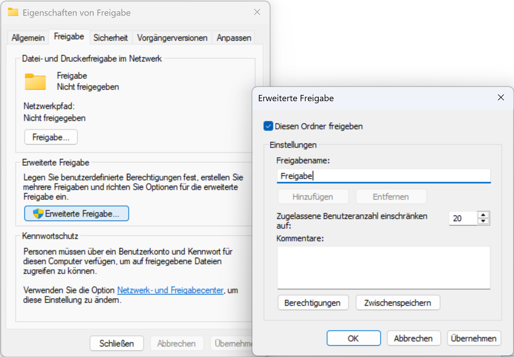
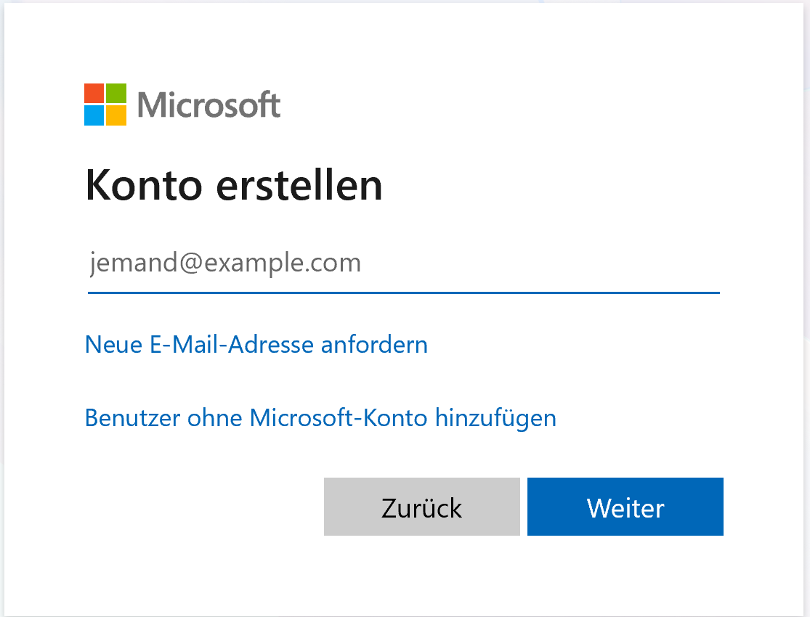
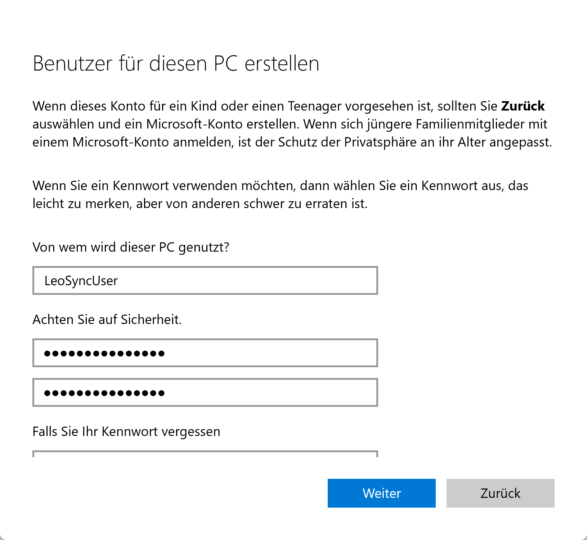
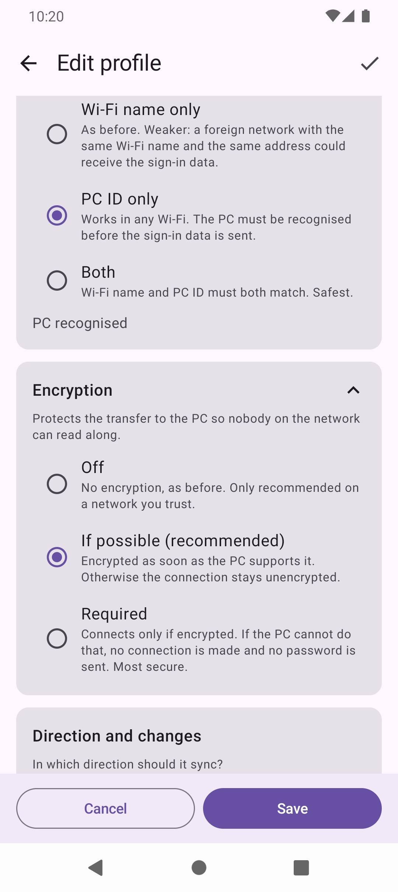
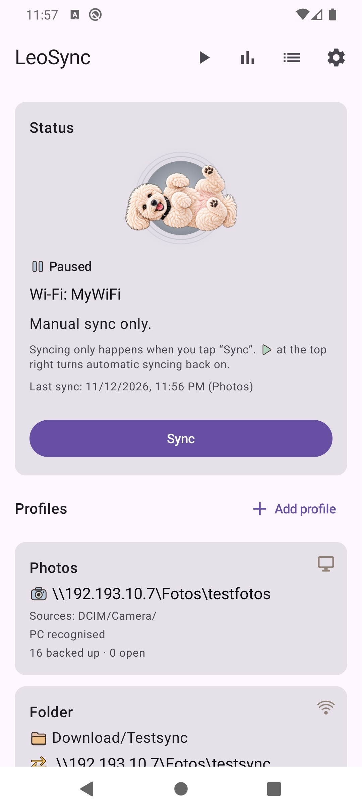
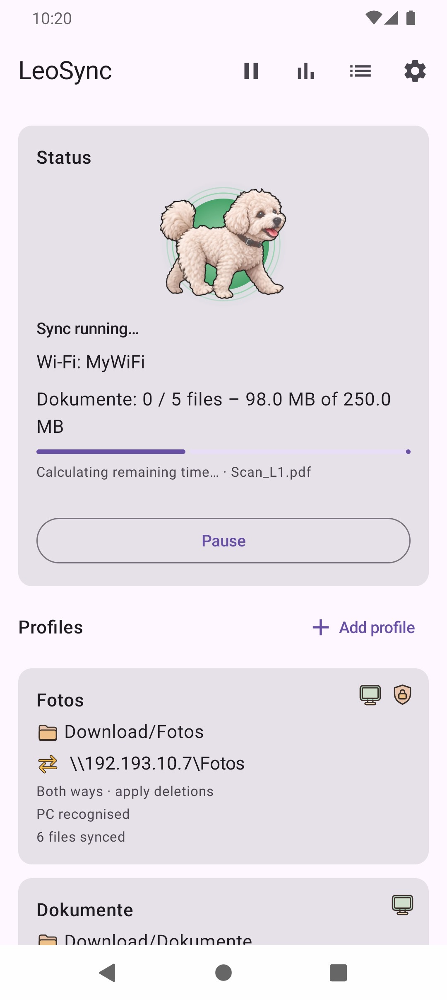
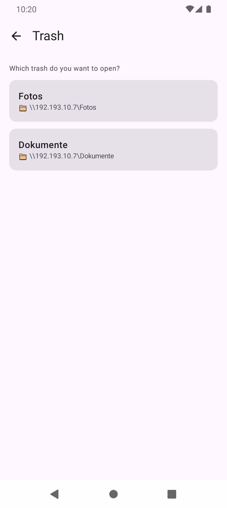
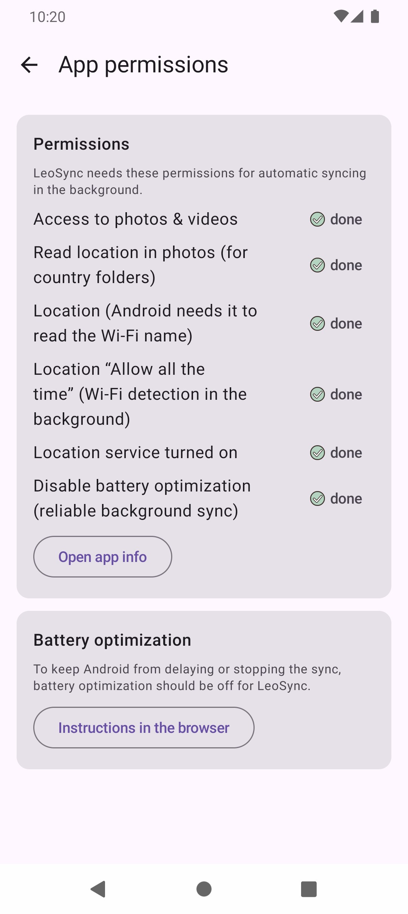

LeoSync backs up photos, videos and any folder from your phone to your Windows PC – directly on your home network, without a cloud and without an account. Files only travel between phone and PC.
1. On the PC: share a folder
- In Explorer, right-click the target folder (e.g.
D:\Photos) → Properties → Sharing → Advanced Sharing. - Tick Share this folder and give it a share name (e.g.
Photos). - Under Permissions, allow Change and Read for your Windows user.
- Find the PC's IP address with
ipconfigin the command prompt (e.g.192.168.1.20). Ideally, give the PC a fixed address in your router.


Create a dedicated local user for LeoSync
Instead of your normal Windows account, you can use a dedicated local user just for LeoSync. That way, your personal password (or your Microsoft account password) is not stored in the app, and the user only gets rights to the one shared folder.
- Create the user: Settings → Accounts → Other users (Windows 10: Family & other users) → Add account → I don't have this person's sign-in information → Add a user without a Microsoft account. Choose a user name (e.g.
leosync) and a password. The password must not be empty, because Windows refuses network access with an empty password.
Alternatively, open the command prompt as administrator and runnet user leosync * /add. Windows then asks for the password. - Share permission: In Explorer, right-click the target folder → Properties → Sharing → Advanced Sharing → Permissions → Add. Enter the user name, click Check Names and confirm with OK. Then allow Change and Read.
- Folder permission: In the same Properties window, go to Security → Edit → Add, enter the user and allow Modify. Windows checks both share and folder permissions, and the stricter setting applies.
- Enter it in LeoSync: In the profile, enter the new user name and its password. For a local account, you usually leave the domain field empty. If the sign-in does not work, try
PC-NAME\leosyncas the user. You find the PC name under Settings → System → About. Use Test connection to check the result.
This is what step 1 looks like in Windows (shown in German):



2. In LeoSync: create a profile
Tap Add profile and choose the type:
- Back up photos & videos – from the camera to the PC, sorted automatically by year, month and travel country (e.g.
2026\06 - Egypt). Optionally remove them from the phone afterwards. - Sync a folder – any folder 1:1, in one or both directions.
The wizard guides you step by step through name, source, target and options. For the target, the PC is enough (\\192.168.1.20) plus user and password; Choose folder on the PC… then lists the shares and folders. Test connection shows right away whether everything is correct.
For photo profiles you choose the folder structure: Year\Month - Country (default), Year\Country\Month or Year\Month\Country. It can be changed until the profile's first sync. Several photo profiles with the same target must use the same structure.
Under PC ID you decide per profile how LeoSync recognises your PC: Wi-Fi name only (default for existing profiles; weaker: a foreign network with the same Wi-Fi name and the same address could receive the sign-in data), PC ID only or Both. The ID is checked before the user name and password are sent. After a change, confirm it with Test connection. The ID changes after a fresh Windows installation; then open the profile and tap Test connection again. On some NAS devices (Samba) the ID may not be stable; use Wi-Fi name only there.
Number fields in a profile only accept values in the allowed range: Empty trash after … days 0 to 3650 (0 = never), Safety brake 1 to 100 %. An invalid value is reported below the field and Save is blocked. In the wizard, Next does not let you leave a step with an empty or invalid number field; Save jumps to the first step with an error. For filters, a pattern with an unclosed bracket is rejected. The filter card shows a short summary, and the profile card says Filter active.
When saving, LeoSync warns if profiles overlap, also between a photo profile and a folder profile: when the photo profile's target folder is the same as, lies inside, or contains the folder profile's PC folder, and when a photo source folder and the phone folder lie inside each other while the folder profile writes files to the phone. Photo profiles capture the same folder path on all storage volumes (internal storage and SD card), so the warning compares phone folders regardless of the volume. A folder profile directly at the top level of the storage also warns, because it contains all photo folders. Continue with Save anyway.
Turning on encryption
On the Encryption card in the profile (collapsed by default) you decide per profile whether the transfer to the PC is encrypted, so that nobody on the network can read along. The profile card shows a shield-with-lock icon at the top right when the profile's last sign-in was actually encrypted (not just because the setting is "If possible"). After changing the setting, the share or the subfolder, the card shows no icon until the next connection:
- Off: no encryption, as before. Only recommended on a network you trust.
- If possible (recommended): encrypted as soon as the PC supports it. Otherwise the connection stays unencrypted. This is the default, also for existing profiles.
- Required: connects only if encrypted. If the PC cannot do that, no connection is made and no password is sent. Most secure.
Test connection shows whether the connection is encrypted and which SMB version is used. Encryption exists only from SMB 3; Windows 10 and 11 support it, on a NAS (Samba) it depends on the device's settings. If Required is selected and the PC cannot encrypt, a message says so. For automatic syncs LeoSync reports this only once per profile until a sync succeeds again; when you start a sync by hand, the message appears every time.
Steps on the PC or NAS (per the manufacturer's documentation; not checked by us on every device). Test connection in LeoSync always shows whether it worked.
- Windows 10 and 11: Open PowerShell as administrator. Encrypt one share:
Set-SmbShare -Name <share name> -EncryptData $true. All shares of the PC:Set-SmbServerConfiguration -EncryptData $true. Check the state:Get-SmbShare -Name <share name> | Select-Object Name, EncryptData(True= on). Afterwards the share accepts only devices with SMB 3 and encryption; others get «Access denied». Do not setRejectUnencryptedAccessto$false; Microsoft advises against it. - Samba (e.g. Linux, many NAS): In
smb.conf, set the parameterserver smb encrypt(globally or per share) todesiredorrequired. This exists only from SMB 3, andserver max protocolmust allow SMB3 or newer. - Synology and QNAP: Menus differ between firmware versions; please use the manufacturer's help. On Synology (DSM 7) the option is called «Transport encryption mode on SMB3» (Control Panel › File Services › SMB › Advanced Settings). On QNAP the highest SMB version must be set to SMB 3.0.
- The server only supports SMB 2: Then encryption is not possible, and LeoSync does not connect with Required. Turn on SMB 3 on the server (or update it). If that is not possible, choose If possible or Off in LeoSync. The transfer is then unencrypted and should only happen on a trusted home network.
New profiles only start after you tap Sync once. You can simulate first what would happen.




3. Day to day
- Automatic: As soon as the phone is connected to one of the entered Wi-Fi networks, LeoSync syncs in the background. Without a Wi-Fi name, it syncs only when you trigger it.
- Check interval for folder profiles: Under Settings → Transfer, Folder profiles: check interval (minutes) (15 to 1440, default 60) sets how often LeoSync checks folder profiles for changes. The setting applies to all folder profiles (formerly per profile, the shortest one was effective); on update the app takes over the shortest previous interval. Checks only run while an active folder profile exists.
- New photos (minimum age): Minimum age for photos (minutes) under Settings → Transfer sets how old a photo must be at least. After a series of photos only one catch-up run happens, as soon as the newest photo has reached the minimum age (instead of one per photo); if no photos are ready to transfer, no run starts and no history entry is created.
- Mobile data/VPN: Under Settings → Transfer you can allow automatic sync outside Wi-Fi as well (off by default). This can use data and, with some mobile plans, cost money, for example abroad. If the PC is not reachable, LeoSync only retries every 2 hours outside Wi-Fi.
- Only while charging: If you wish, LeoSync only syncs while the phone is charging (Settings).
- Manual: Tap Sync or pull down at the very top of the home screen. If a sync is already running, your start is not discarded but run once afterwards: LeoSync says "Will start after the current sync.", and the status card shows "Next: all profiles" (for an automatic start "Another sync follows."). Pause or cancelling discards the queued start.
- Pause: ⏸ at the top right – for a while or "forever" (manual only). ▶ resumes. The status card then shows the heading "⏸ Paused" and below it "Until 06:23." or "Manual sync only.".
- Icons on the profile card: At the top right the card shows only the icons that apply, from left to right without gaps: Wi-Fi (you are currently on the saved Wi-Fi), PC (the PC's identifier is known, "PC recognised") and the shield (the last sign-in was encrypted). The state is also shown in the text lines below the name. The former text "on Wi-Fi ✓" is gone.
- The dog shows the state: sleeping = everything backed up, running = sync in progress, standing = waiting for your decision, sitting = waiting (e.g. for Wi-Fi, the first sync, or files that follow later). The status card never says "all up to date" with an open conflict, no connection, pending files, or an error in the last run.
- "↻ Not everything backed up yet": If a file changed on the phone or PC during the sync, LeoSync skips it in that run and catches up later. The run still counts as successful; the history says "· N follow later", and the home page says "N files changed during the run and follow at the next sync." You do not need to do anything: LeoSync automatically starts a follow-up run after 5 minutes, at most one per hour (pause and "manual only" are respected). After that the usual triggers such as folder check and Wi-Fi apply. As soon as a run ends without pending files, the card says "All backed up and up to date" again.
- "No connection" and "Start not possible": If a start could not be carried out because the PC or Wi-Fi is not available, the status card shows "No connection" (the sitting dog on a blue circle while files are waiting) instead of "Ready" or an error; a manual start reports "Start not possible". The "Wi-Fi" line stays empty when the Wi-Fi name cannot be read and updates when the network changes. "All backed up" appears only once every active profile has been started successfully by hand. "Waiting for the home Wi-Fi." appears only after an interruption in the middle of a run. With "No connection" the card also shows how many files are waiting ("1 file is waiting for synchronization." / "N files are waiting for synchronization."). The profile card of a folder profile additionally shows "N open": new files or files changed since the last comparison in the phone folder. The number is counted on the phone only (no network); there is no counter for "PC → Phone", and Photos profiles do not show it.
- Backup: The messages on export and import also count the sync status of folder profiles (previously only photo files; the folder state was already included).
- Date and time: All displays follow the phone's system settings (region, 12 h/24 h), even if the app language differs (e.g. US format with a German app). Fixed formats remain for file names, backup/export, diagnostics and trash day folders.
- "Last sync": The home screen shows the last run without errors (with the profile), not the last attempt; a run without errors counts even if there was nothing to transfer. Runs with errors, partial success or cancellation do not change the time. Without a successful run it says "No successful sync yet.".
- Profile names: Each profile name may occur only once (case and spaces at the edges are ignored). It is checked at Next in the name step, when saving and when editing. Existing duplicate names are not renamed but reported when editing; saving other changes remains possible. Import with Add deliberately does not check names.
- Wi-Fi name: With the PC ID Wi-Fi name only and Both, the Wi-Fi name is required; without it Next and Save cannot be tapped (red hint in the "Wi-Fi" card).
- "Access denied" in the connection test: If encryption is set to Off, the message names it as a possible cause (the server may require it).
- Import "Replace": The warning stays fixed at the top in the error colour; the backup details scroll below it.
- Notice "Location permission missing": Android needs the location permission to read the Wi-Fi name. The notice appears only if a profile needs the Wi-Fi name (PC ID Wi-Fi name only or Both, with a Wi-Fi name entered). If it is missing, the status card shows "⚠ Location permission missing – the Wi-Fi name cannot be read." with a Permissions button that leads to Settings → App permissions. As long as it is missing, automatic sync on your home Wi-Fi is disturbed.
- "Phone folder: access lost": If LeoSync no longer has access to a profile's phone folder (e.g. after importing the settings), the profile card shows "⚠ Phone folder: access lost – tap to choose again". Tapping opens the profile, where you choose the folder again.
- Free up space: In the tools on the home screen, LeoSync removes old files from the phone that are verifiably on the PC. Each file is checked on the PC first; you choose by age, folder, file type and size and see a preview. Photos and videos go to the gallery trash (Android 10 has none; a note says so). The result states how many files were deleted and skipped and how much space was freed.
- Backup of your settings: Profiles, settings and sync status can be exported to a file and imported again. Passwords are only included, encrypted, with an export password. The app language is not part of the backup. On import, Replace is highlighted in a warning colour because it replaces the existing profiles.
- History: With Delete history you remove the entries. LeoSync asks first and then offers Undo while the message at the bottom is visible. Error entries show a recommended action. The history filter resets when you leave the page.
- Language: The app language follows the phone's language (German, otherwise English). Under Settings → Language you can set it permanently.




4. Keeping your files safe
- Check after upload: LeoSync reads the file back from the PC and compares it with the original. The levels range from Off to Complete; the default is Medium. If photos are removed from the phone, a check is always done.
- Trash: For folder profiles, deleted and overwritten files go to the
@LeoSync-Binfolder (on phone and PC/NAS; a normal, visible folder, whereas the former name.LeoSync-Binwas hidden on QNAP/Samba). LeoSync renames older trash folders (.LeoSync-Binand others) automatically on the next run or moves their contents, without copying or overwriting anything; the history shows a line about it. If a PC rejects the name@LeoSync-Bin, LeoSync uses.LeoSync-Binthere and warns in the history. The row for each version in the trash shows "modified …" (the file's modification time), otherwise "deleted on …". Entries can be restored via Tools → Trash: choose the profile, select entries and tap Restore (or Delete permanently). Each file on the phone has Open: it opens the file for viewing only with the default app or the Android app chooser, nothing changes in the trash; without a suitable app or if the file is missing, a message appears. Files only on the PC have no Open. Show (Phone and PC / Phone only / PC only) and Day narrow the list; if a filter changes and the selection would contain hidden entries, the selection is cleared. The selection bar and the delete dialog name the sides concerned. Restore always writes back to phone and PC, even with a filter; the dialog states how many files are replaced according to the sync status (the current version goes to the trash first) and how many are newly created. On the phone, LeoSync places an empty.nomediafile in the trash so the gallery does not show it (not for download folders with a number tag); files in the trash are not backed up by a photo profile and not offered by Free up space. It is emptied after 30 days (adjustable). Photo profiles have no trash of their own: removed photos are in the gallery trash. - Safety brake: If many files would be deleted at once (default: more than 20 %) or a whole folder is missing, LeoSync stops and asks you first. You then choose between Don't delete and Move to trash anyway; until then the profile rests.
- Confirm change: If you change the direction of an existing folder profile or switch on Apply deletions, LeoSync shows what changes before saving, and you confirm with Save or cancel with Cancel. With a one-way direction, differing files on the target side are replaced; the replaced version may go to the trash.
- Removing after backup: Before LeoSync removes a backed-up photo from the phone, it checks the copy on the PC again. If the PC is not reachable, nothing is deleted ("PC not reachable – nothing deleted"). If the copy is missing or differs, the original stays on the phone and is backed up again on the next run. Free up space additionally checks size, partial checksum and modification date.
- Conflicts: If a file was changed on the phone and PC and no automatic rule is set, you decide which version wins. The other one goes to the trash. On the conflict card the newer side is marked "(newer)"; with the same timestamp (to the second) it says "(same age)". With Keep both, the phone file becomes the conflict copy
…_conflict-phone; if that name already exists, it is called…_conflict-phone-2,-3and so on. The conflict copy never overwrites an existing PC file. Undo after a decision works reliably: once you have undone it, LeoSync no longer carries out the decision, even if a sync is running at that moment. - Encryption: With the Required level, LeoSync sends the user name and password only if the connection can be encrypted (see Turning on encryption).
- PC ID: With the PC ID only and Both settings, LeoSync sends the user name and password only to a recognised PC. With an unknown PC, the app does not sign in and skips the profile. The ID is not secret: it protects against an unknown server on a foreign network, not against a targeted attack.



5. Common messages
This is how a message looks after Test connection (here: user name or password is wrong):

| Message | What to do |
|---|---|
| User name or password is wrong | Check the Windows user and password. For a Microsoft account, use the e-mail address as the user. Or create a dedicated local user. |
| This share does not exist on the PC | Check the share name or pick it with Choose folder on the PC…. |
| No access to this folder | Allow Change for the user in the share permissions. |
| The PC is not reachable | Is the PC switched on (not asleep)? Is the phone on the same Wi-Fi? Does the firewall allow "File and Printer Sharing"? |
| PC not reachable – nothing deleted | Shown as a message at the bottom (about 8 seconds, dismissible) when LeoSync could not check the PC while removing after backup. The files stay marked and on the phone. Check the connection and try again. |
| The PC is not recognised yet / PC unknown | No sign-in data was sent. On your own Wi-Fi, open the profile and tap Test connection. If the PC provides no ID (e.g. some NAS devices), set the PC ID to Wi-Fi name only. |
| The PC name was not found | Enter the IP address instead of the name, e.g. \\192.168.1.20. |
| PC folder not found (safety brake) | Was the folder renamed or moved? Rename it back and tap Check again – or choose a new folder. |
6. Sync stops in the background
Many manufacturers close apps in the background very aggressively. In LeoSync under Settings → App permissions, you can see which permissions LeoSync needs for automatic background sync and which are already done: access to photos and videos, notifications, location (Android needs it to read the Wi-Fi name) and disabling battery optimization. More: dontkillmyapp.com.

7. Privacy
LeoSync has no server and collects no data. Passwords are stored encrypted on the phone (Android Keystore). Diagnostic data only leaves the phone if you share it yourself. For details, see the privacy policy.
Contact
Questions or problems: leotools@protonmail.com. You can also submit bug reports and suggestions through GitHub Issues.